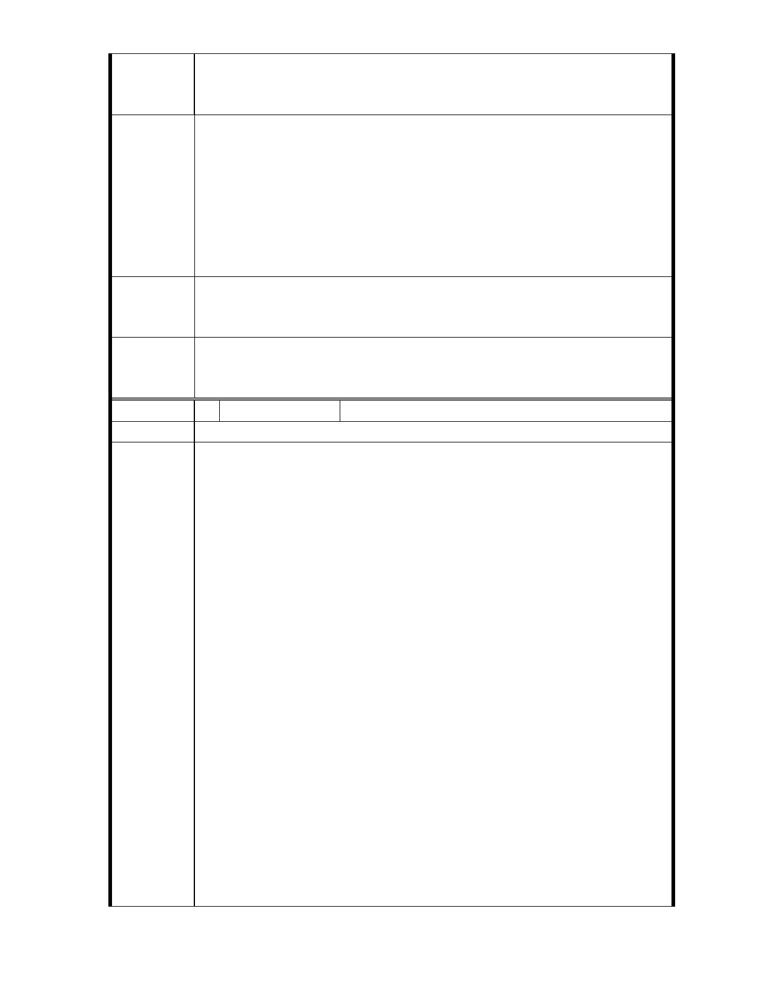

常情，外地之車輛不會無故繞到本地加油，因此，本加油
站之設立也不會增加附近之交通量，反而可避免當地居民
繞到外面加油之不便。
綜上所陳，陳情人一切依法興建加油站，有關臺北市政府及其所
屬機關之違法行政處分，全部都遭到台北高等行政法院、最高行
政法院判決及內政部訴願審議委員會予以撤銷，惟臺北市政府及
建議辦法
都發局仍不放棄以其他方式阻撓本加油站之興建，實非行政機關
應有之「依法行政」之作為。此外，本加油站之設置非但不影響
故宮之週邊環境、亦無礙於附近之交通設施，反而有助於大故宮
文創園區、觀光產業之推動，本加油站用地實有存續之必要，且
本加油站亦有興建之必要性。
專
結
案
小
組
論
至德園西側原公園用地（加油站用地）變更為交通用地，交通局
說明擬設置瑰寶大道自行車專用道中繼站，請交通局提出交通（包
括自行車）系統整體規劃併提大會討論。
委
決
員
會
議
至德園西側加油站用地依委員建議變更為交通專用區，未來發展
為結合旅遊資訊、自行車維修、餐飲等服務之專用區，使用項目
及使用強度等則於細部計畫訂定。
編 號 6 陳情人 兆亨事業有限公司
建議位置
緣臺北市都市計畫委員會於民國 100 年 6 月 2 日以北市畫會
一字第 10030272000 號書函 , 訂於同年 6 月 9 日召開專案小組
審查會議，陳述人敬提書面意見如下 :
一、本次通盤檢討之緣起及主要計畫及禁建案，顯係針對本公司
興建中之加油站而來，臺北市政府戕害人民對於政府之信
賴，使都市計畫淪為政府對付守法人民的工具：
（一）本加油站之基地早在民國 76 年間即變更為「加油站用地」，
本公司信賴政府之公告，投入鉅資購買土地，並與國有財
產局訂定土地租約。籌設期間雖經故宮博物院反對，惟經
環境影響評估報告證實本加油站之興建不會對於故宮周邊
的環境產生影響後，故宮博物院爰表示「尊重」，臺北市政
陳情理由
府產業發展局及都市發展局旋即依法審核准予核發籌設許
可及建造執照。
（二）詎料，工程進行中，都市發展局竟違法廢止建造執照，幸
經最高行政法院判決都市發展局違法濫權而敗訴確定；其
後該加油站用地又遭臺北市政府違法變更為公園用地，然
亦經內政部訴願審議委員會撤銷，臺北市政府之違法行政
處分。臺北市政府歷經挫敗，在別無其他辦法的情況下，
仍不放棄阻撓本加油站的興建，而此正是本次臺北市士林
區外雙溪地區都市計畫通盤檢討 ( 主要計畫 ) 案之緣
由。
（三）經查，臺北市政府先前將本加油站用地變更為公園用地之
理由，即為「考量基地鄰近故宮博物院，如發生意外，恐
- 17 -